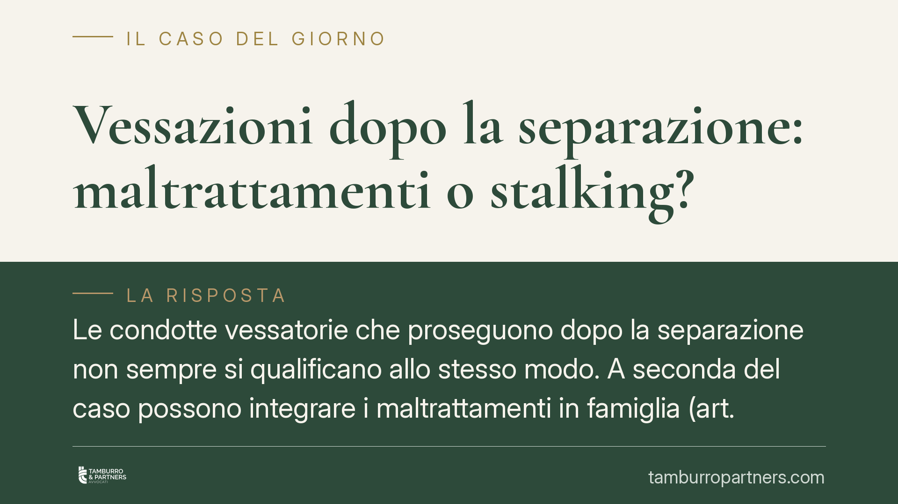

Vessazioni dopo la separazione: maltrattamenti o stalking?
Le condotte vessatorie che proseguono dopo la separazione non sempre si qualificano allo stesso modo. A seconda del caso possono integrare i maltrattamenti in famiglia (art. 572 c.p.), con procedibilità d'ufficio, o lo stalking (art. 612-bis c.p.), procedibile a querela. Cambiano pena, misure cautelari e strategie difensive. Nodo centrale è la permanenza, in concreto, di un vincolo di solidarietà tra gli ex coniugi.

Il caso e un avvertimento sulla fonte
Si discute di un orientamento secondo cui le vessazioni al coniuge che proseguono dopo la separazione di fatto possano continuare a integrare il reato di maltrattamenti in famiglia, anziché lo stalking, con aggravamento di pena quando le condotte avvengono in presenza di figli minori.
Un avviso di metodo, doveroso. Gli estremi della pronuncia richiamata (Cass. n. 7357/2026) non risultano al momento verificabili e la data appare incoerente rispetto all'attuale momento di redazione. Trattiamo quindi il dato come orientamento da verificare: prima di qualsiasi utilizzo processuale è necessario riscontrare la massima ufficiale. Quanto segue vale come inquadramento generale, non come commento a una sentenza accertata.
Inquadramento normativo
L'art. 572 c.p. punisce chi maltratta una persona della famiglia o comunque convivente, con reclusione da tre a sette anni. Il comma 2 prevede un aggravamento se il fatto è commesso in presenza o in danno di persona minore (la cosiddetta *violenza assistita*): un riferimento rilevante proprio nei conflitti tra genitori.
Lo stalking (art. 612-bis c.p.) punisce invece le condotte reiterate di minaccia o molestia che cagionano perdurante stato d'ansia, timore per l'incolumità o costrizione a mutare abitudini di vita. La pena base va da un anno a sei anni e sei mesi; il comma 2 aggrava il trattamento quando il fatto è commesso dal coniuge, anche separato o divorziato, o da persona legata da relazione affettiva alla vittima.
La differenza di procedibilità è decisiva. I maltrattamenti procedono d'ufficio: lo Stato agisce a prescindere dalla volontà della vittima. Lo stalking, nelle ipotesi ordinarie, è invece procedibile a querela della persona offesa, con termini e possibilità di remissione in casi determinati.
Il discrimine tra le due fattispecie
La qualificazione non è automatica e dipende da un accertamento di fatto. La giurisprudenza distingue:
- se dopo la separazione di fatto permane un vincolo di solidarietà e assistenza tra gli ex coniugi — spesso radicato nei rapporti genitoriali e nella gestione condivisa dei figli — può residuare lo spazio per i maltrattamenti ex art. 572 c.p.;
- se invece il rapporto è cessato definitivamente, venendo meno ogni residuo legame familiare e assistenziale, le condotte persecutorie tendono a essere ricondotte allo stalking.
La cessazione totale del rapporto non è dunque un dettaglio: è proprio il discrimine che può far slittare la fattispecie verso l'art. 612-bis c.p. Chi imposta una difesa sulla fine del vincolo coniugale non percorre una strada irrilevante; ma neppure risolutiva in sé, perché il giudice valuta la permanenza concreta della relazione familiare, non la sola formalizzazione della separazione.
Implicazioni pratiche
Per chi subisce le condotte, la qualificazione incide sulla tutela. Con i maltrattamenti l'azione non dipende dalla querela e non si espone al rischio di decadenza dei termini. In entrambe le ipotesi possono essere richieste misure cautelari, come l'allontanamento dalla casa familiare e il divieto di avvicinamento ai luoghi frequentati dalla persona offesa.
Per chi è indagato, la posta è alta: la forbice edittale del 572 è più severa nel minimo e consente, in presenza dei presupposti, misure più incisive. La presenza di figli minori durante le condotte può attivare l'aggravante del comma 2.
Il ruolo dei minori
L'esposizione dei figli a condotte violente o vessatorie tra i genitori non è un elemento di contorno. Sul piano penale rileva come aggravante; sul piano del diritto di famiglia può incidere su affidamento, collocamento e regolazione delle visite. È opportuno coordinare la vicenda penale con i procedimenti civili, perché le valutazioni si influenzano reciprocamente.
Cosa fare in concreto
- Documenta tempestivamente ogni episodio: messaggi, registrazioni ammissibili, referti medici, testimonianze.
- Non attendere la separazione formale: la tutela penale e cautelare può essere attivata anche in costanza di separazione di fatto.
- Segnala la presenza dei minori al momento dei fatti, elemento rilevante per l'aggravante dell'art. 572, comma 2, c.p.
- Verifica la via corretta: per lo stalking valuta tempi e modalità della querela; per i maltrattamenti ricorda che l'azione è d'ufficio.
- Coordina la posizione penale con i procedimenti su affidamento e mantenimento, affidandoti a un confronto professionale sul caso concreto.
Disclaimer
Contributo informativo a cura di Tamburro & Partners Avvocati - Avv. Giuseppe Tamburro. Non costituisce parere legale.
Ogni condominio ha una storia a sé.
Se gestisci un'amministrazione e vuoi un confronto su una specifica questione condominiale, scrivi allo studio. Ti rispondiamo entro un giorno lavorativo.